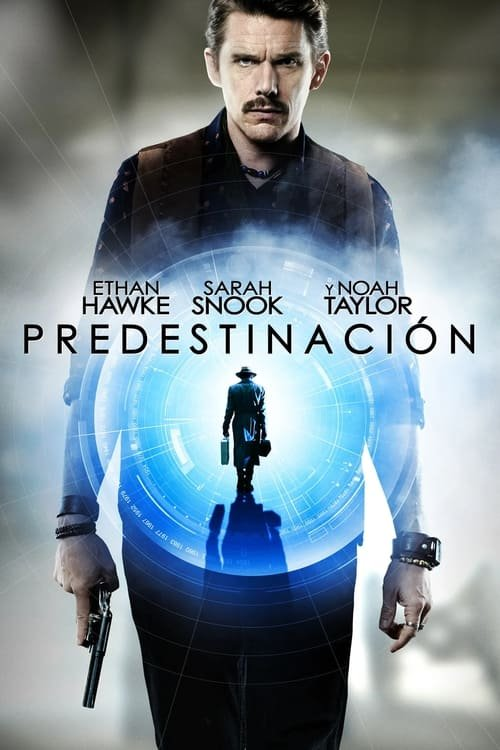

Predestination (2014)

Plataforma: Netflix
Puntuación IMDb: 7.2/10
Duración: 1h 50m
Género: Thriller, Misterio
Sinopsis Rápida
Un agente temporal viaja a través del tiempo para evitar una catástrofe. Pero en su búsqueda se encuentra con un misterio que podría cambiar el curso de la historia. ¿Hasta dónde llegarías para corregir el pasado?
Sinopsis Detallada
Predestination sigue a un agente temporal que viaja al pasado para detener a un terrorista. Sin embargo, se ve envuelto en una compleja trama llena de giros inesperados que lo llevan a una verdad perturbadora sobre su propia identidad. La película es un thriller inteligente y con una estructura no lineal que mantiene al espectador intrigado hasta el final.
¿Por qué tenés que verla?
- Una trama compleja y llena de giros sorprendentes.
- Su final impactante e impredecible.
- Una exploración de las paradojas temporales con un enfoque humano.
- Un thriller inteligente y cautivador.
Idea Extra
Explicación detallada de la estructura no lineal de la trama y su impacto en la experiencia del espectador.